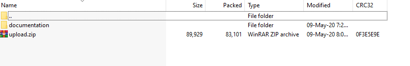
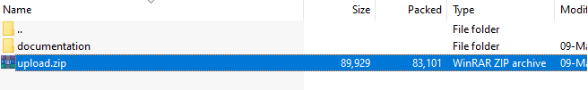
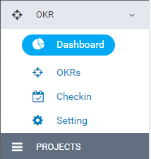
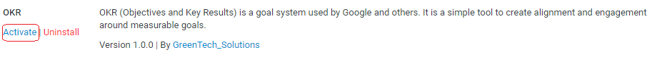
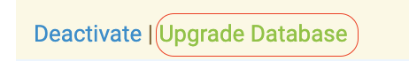

“OKR module for Perfex CRM” Documentation by “greentech_solutions” v1.0.2
“OKR module for Perfex CRM”
Created: 2020-08-21
By: Hung Tran
Email: hungtx.gsts@gmail.com
Thank you for choosing OKR module for Perfex CRM. If you have any questions that are beyond the scope of this help file, please feel free to email us via contact form here.
Table of Contents
A) Upload & activate the module - top
-
* Prior starting installation, please make sure that no open_basedir restriction is applied at your PHP configuration and that shell_exec is enabled. Whereas in 95% of the hosting providers around, got a proper config that includes the above guides, you may need to adjust your PHP configuration settings if your provider offers these settings disabled by default.
- Extract your downloaded file contens. You will notice a folder called "documentation" and a new zip file, called "upload.zip". Since "documentation" folder contains this readme file and helpful instructions that are not needed in your Perfex CRM's installation, we will focus on the "upload.zip" file.

- "upload.zip" contains the module files (in a module format) that you upload in Perfex CRM's Modules installation section.

- Go to your Perfex CRM's Admin area and select the following menu item: SETUP > MODULES.

- Select the extracted upload.zip at Module installation selection prompt and press INSTALL.
- Find the newly installed module and press ACTIVATE.

- You will be told that module is successfully activated.
- If the version you have downloaded is larger than the current version, please click UPGRADE DATABASE (if available)
- Steps of Installation:


That's it! You are now ready to start using the module.
B) How to use Team Password module - top
- First you go to setting Circulation, Question, Evaluation criteria, Unit: OKR -> Setting
- Second, create new OKR: Includes 2 display ways: Chart, List 1. Chart: OKR -> SWITCH TO CHART OKR
- Third, Checkin OKR - Filter by Circulation, okr, staff :
- Fourth, Report: 4.1. Progress this week: Reports on OKR's progress according to Confidence level
1.1. Tab Circulation: Circulation -> ADD 
- Edit Circulation: Click icon
1.2. Tab Question: Question -> ADD 
- Edit question: Click icon
1.3. Tab Evaluation criteria: Evaluation criteria -> ADD 
- Edit Evaluation criteria: Click icon
1.4. Tab unit: Unit -> ADD 
- Edit unit: Click icon
Create new OKR:OKR -> ADD

On the chart can filter by Circulation, okr, staff :

Chart of OKR:

Hover on okr to see detailed progress results:

Click okr name to see details:

2. List: OKR -> SWITCH TO TREE OKR
- Create new OKR:OKR -> ADD
List of OKR:

On the list can filter by Circulation, okr, staff:
Hover on column Key results to see detailed progress results:

- View detail: Click icon
- Edit okr unfinish: Click icon

- Hover on column Key results to see detailed progress results
- Click button checkin in colum: When choosing an upcoming subscription period you may only choose during a period of Circulation

When check COMPLETE OKR the UPCOMING TIME field is hidden, the button CHECKIN is hidden, on the OKR list cannot be edited

- Tab History saves the checked log times:

Click "view detail" view log:


4.2. Checkin status: Checkin on each type of confidence level

4.3. Okrs company: List the number of all OkRs by object, progress, confidenece level, key results

4.4. My OKR: List the number of all OkRs by object, progress, confidenece level, key results of you

Once again, thank you so much for purchasing this module. We will be glad to help you if you have any questions relating to this module.
GreenTech Solutions